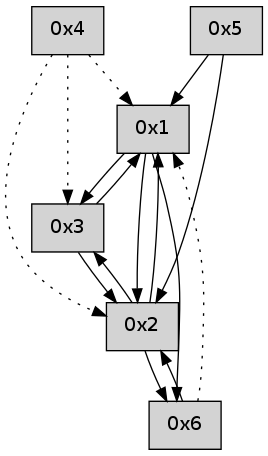

>> << IDX [start] -100 -25 -5 +0 +5 +25 +100 [445.015418053]
 Previous packets
----------------------------------------------------------------------
440.094333 beacon01(adaf) #0 coord=01,02,05,03,04,06 cycle=432.0ms assoc
-- color-indic=0 64 de 4d
440.104294 beacon02(adaf) #0 coord=01,02,05,03,04,06 cycle=432.0ms assoc 64 8f b2
440.114295 beacon05(adaf) #0 coord=01,02,05,03,04,06 cycle=432.0ms assoc 64 29 98
440.124294 beacon03(adaf) #0 coord=01,02,05,03,04,06 cycle=432.0ms assoc 64 b5 bc
440.134295 beacon04(adaf) #0 coord=01,02,05,03,04,06 cycle=432.0ms assoc 64 13 96
440.144295 beacon06(adaf) #0 coord=01,02,05,03,04,06 cycle=432.0ms assoc 64 67 8a
440.155918 [Hello(3): seq=238 sym=2,1 sysInfo= stat=2:13,0,0,0/1:3,0,0,0]
440.159645 [Hello(4): seq=238 asym=2,1,3 sysInfo= stat=2:13,0,0,0/1:4,0,0,0/3:2,0,0,0]
440.162724 [Hello(1): seq=137 sym=3,2,6 sysInfo= stat=3:2,0,0,0/2:0,0,0,0/6:2,0,0,0]
----------------------------------------------------------------------
440.586441 beacon01(adaf) #0 coord=01,02,05,03,04,06 cycle=432.0ms assoc
-- color-indic=0 64 1a 22
440.596402 beacon02(adaf) #0 coord=01,02,05,03,04,06 cycle=432.0ms assoc 64 4b dd
440.606401 beacon05(adaf) #0 coord=01,02,05,03,04,06 cycle=432.0ms assoc 64 ed f7
440.616401 beacon03(adaf) #0 coord=01,02,05,03,04,06 cycle=432.0ms assoc 64 71 d3
440.626403 beacon04(adaf) #0 coord=01,02,05,03,04,06 cycle=432.0ms assoc 64 d7 f9
440.636403 beacon06(adaf) #0 coord=01,02,05,03,04,06 cycle=432.0ms assoc 64 a3 e5
440.648065 [Hello(2): seq=735 sym=6,1,3 sysInfo= stat=6:9,0,0,0/1:11,0,0,0/3:4,0,0,0]
----------------------------------------------------------------------
441.078550 beacon01(adaf) #0 coord=01,02,05,03,04,06 cycle=432.0ms assoc
-- color-indic=0 64 57 25
441.088511 beacon02(adaf) #0 coord=01,02,05,03,04,06 cycle=432.0ms assoc 64 06 da
441.098511 beacon05(adaf) #0 coord=01,02,05,03,04,06 cycle=432.0ms assoc 64 a0 f0
441.108511 beacon03(adaf) #0 coord=01,02,05,03,04,06 cycle=432.0ms assoc 64 3c d4
441.118512 beacon04(adaf) #0 coord=01,02,05,03,04,06 cycle=432.0ms assoc 64 9a fe
441.128514 beacon06(adaf) #0 coord=01,02,05,03,04,06 cycle=432.0ms assoc 64 ee e2
441.139296 [Hello(1): seq=138 sym=3,2,6 sysInfo= stat=3:2,0,0,0/2:1,0,0,0/6:2,0,0,0]
441.143835 [Hello(4): seq=239 asym=2,1,3 sysInfo= stat=2:14,0,0,0/1:5,0,0,0/3:2,0,0,0]
----------------------------------------------------------------------
441.570663 beacon01(adaf) #0 coord=01,02,05,03,04,06 cycle=432.0ms assoc
-- color-indic=0 64 93 4a
441.580623 beacon02(adaf) #0 coord=01,02,05,03,04,06 cycle=432.0ms assoc 64 c2 b5
441.590624 beacon05(adaf) #0 coord=01,02,05,03,04,06 cycle=432.0ms assoc 64 64 9f
441.600624 beacon03(adaf) #0 coord=01,02,05,03,04,06 cycle=432.0ms assoc 64 f8 bb
441.610626 beacon04(adaf) #0 coord=01,02,05,03,04,06 cycle=432.0ms assoc 64 5e 91
441.620624 beacon06(adaf) #0 coord=01,02,05,03,04,06 cycle=432.0ms assoc 64 2a 8d
441.632304 [Hello(2): seq=736 sym=6,1,3 sysInfo= stat=6:10,0,0,0/1:12,0,0,0/3:4,0,0,0]
----------------------------------------------------------------------
442.062770 beacon01(adaf) #0 coord=01,02,05,03,04,06 cycle=432.0ms assoc
-- color-indic=0 64 df fa
442.072731 beacon02(adaf) #0 coord=01,02,05,03,04,06 cycle=432.0ms assoc 64 8e 05
442.082731 beacon05(adaf) #0 coord=01,02,05,03,04,06 cycle=432.0ms assoc 64 28 2f
442.092731 beacon03(adaf) #0 coord=01,02,05,03,04,06 cycle=432.0ms assoc 64 b4 0b
442.102732 beacon04(adaf) #0 coord=01,02,05,03,04,06 cycle=432.0ms assoc 64 12 21
442.112732 beacon06(adaf) #0 coord=01,02,05,03,04,06 cycle=432.0ms assoc 64 66 3d
442.124147 [Hello(1): seq=139 sym=3,2,6 sysInfo= stat=3:2,0,0,0/2:2,0,0,0/6:3,0,0,0]
442.128061 [Hello(4): seq=240 asym=2,1,3 sysInfo= stat=2:15,0,0,0/1:5,0,0,0/3:2,0,0,0]
----------------------------------------------------------------------
442.554878 beacon01(adaf) #0 coord=01,02,05,03,04,06 cycle=432.0ms assoc
-- color-indic=0 64 1b 95
442.564839 beacon02(adaf) #0 coord=01,02,05,03,04,06 cycle=432.0ms assoc 64 4a 6a
442.574840 beacon05(adaf) #0 coord=01,02,05,03,04,06 cycle=432.0ms assoc 64 ec 40
442.584838 beacon03(adaf) #0 coord=01,02,05,03,04,06 cycle=432.0ms assoc 64 70 64
442.594840 beacon04(adaf) #0 coord=01,02,05,03,04,06 cycle=432.0ms assoc 64 d6 4e
442.604839 beacon06(adaf) #0 coord=01,02,05,03,04,06 cycle=432.0ms assoc 64 a2 52
442.616523 [Hello(2): seq=737 sym=6,1,3 sysInfo= stat=6:11,0,0,0/1:13,0,0,0/3:4,0,0,0]
----------------------------------------------------------------------
443.046987 beacon01(adaf) #0 coord=01,02,05,03,04,06 cycle=432.0ms assoc
-- color-indic=0 64 3e a8
443.056948 beacon02(adaf) #0 coord=01,02,05,03,04,06 cycle=432.0ms assoc 64 6f 57
443.066949 beacon05(adaf) #0 coord=01,02,05,03,04,06 cycle=432.0ms assoc 64 c9 7d
443.076950 beacon03(adaf) #0 coord=01,02,05,03,04,06 cycle=432.0ms assoc 64 55 59
443.086949 beacon04(adaf) #0 coord=01,02,05,03,04,06 cycle=432.0ms assoc 64 f3 73
443.096948 beacon06(adaf) #0 coord=01,02,05,03,04,06 cycle=432.0ms assoc 64 87 6f
443.114264 [Hello(1): seq=140 sym=3,2,6 sysInfo= stat=3:2,0,0,0/2:3,0,0,0/6:4,0,0,0]
----------------------------------------------------------------------
443.539095 beacon01(adaf) #0 coord=01,02,05,03,04,06 cycle=432.0ms assoc
-- color-indic=0 64 fa c7
443.549056 beacon02(adaf) #0 coord=01,02,05,03,04,06 cycle=432.0ms assoc 64 ab 38
443.559056 beacon05(adaf) #0 coord=01,02,05,03,04,06 cycle=432.0ms assoc 64 0d 12
443.569055 beacon03(adaf) #0 coord=01,02,05,03,04,06 cycle=432.0ms assoc 64 91 36
443.579056 beacon04(adaf) #0 coord=01,02,05,03,04,06 cycle=432.0ms assoc 64 37 1c
443.589057 beacon06(adaf) #0 coord=01,02,05,03,04,06 cycle=432.0ms assoc 64 43 00
443.600729 [Hello(2): seq=738 sym=6,1,3 sysInfo= stat=6:12,0,0,0/1:14,0,0,0/3:4,0,0,0]
----------------------------------------------------------------------
444.031202 beacon01(adaf) #0 coord=01,02,05,03,04,06 cycle=432.0ms assoc
-- color-indic=0 64 b6 77
444.041163 beacon02(adaf) #0 coord=01,02,05,03,04,06 cycle=432.0ms assoc 64 e7 88
444.051164 beacon05(adaf) #0 coord=01,02,05,03,04,06 cycle=432.0ms assoc 64 41 a2
444.061164 beacon03(adaf) #0 coord=01,02,05,03,04,06 cycle=432.0ms assoc 64 dd 86
444.071164 beacon04(adaf) #0 coord=01,02,05,03,04,06 cycle=432.0ms assoc 64 7b ac
444.081164 beacon06(adaf) #0 coord=01,02,05,03,04,06 cycle=432.0ms assoc 64 0f b0
444.092837 [Hello(4): seq=242 asym=2,1,3 sysInfo= stat=2:1,0,0,0/1:6,0,0,0/3:2,0,0,0]
444.096899 [Hello(1): seq=141 sym=3,2,6 sysInfo= stat=3:2,0,0,0/2:4,0,0,0/6:4,0,0,0]
----------------------------------------------------------------------
444.523311 beacon01(adaf) #0 coord=01,02,05,03,04,06 cycle=432.0ms assoc
-- color-indic=0 64 72 18
444.533272 beacon02(adaf) #0 coord=01,02,05,03,04,06 cycle=432.0ms assoc 64 23 e7
444.543271 beacon05(adaf) #0 coord=01,02,05,03,04,06 cycle=432.0ms assoc 64 85 cd
444.553273 beacon03(adaf) #0 coord=01,02,05,03,04,06 cycle=432.0ms assoc 64 19 e9
444.563274 beacon04(adaf) #0 coord=01,02,05,03,04,06 cycle=432.0ms assoc 64 bf c3
444.573273 beacon06(adaf) #0 coord=01,02,05,03,04,06 cycle=432.0ms assoc 64 cb df
444.584958 [Hello(2): seq=739 sym=6,1,3 sysInfo= stat=6:12,0,0,0/1:15,0,0,0/3:4,0,0,0]